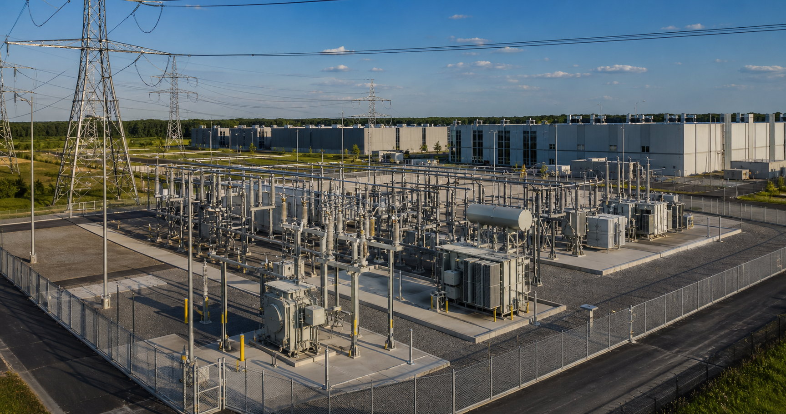

Design the Substation Before You Design the AI Campus

An AI campus can have an excellent building plan and still fail to reach operation on schedule. The reason is simple: the facility cannot move faster than the infrastructure that supplies it. For power-intensive projects, the substation and utility interface belong at the beginning of design.
Start With Available Capacity
A utility service request is not the same as deliverable capacity. Planners need to understand the source, voltage, fault duty, transmission constraints, upgrade scope, and realistic energization sequence. Those answers determine how much compute can be deployed and when.
The One-Line Drives the Campus
The electrical one-line establishes the path from the utility to each phase of the load. It influences equipment ratings, redundancy, protection, physical routing, and the location of major infrastructure. Developing it early exposes dependencies before they become expensive changes in the field.
Long-Lead Equipment Sets Real Dates
Transformers, switchgear, breakers, and protection systems often carry procurement timelines that exceed the building schedule. Early specifications and coordinated purchasing protect the critical path. Standardized designs can also create options when the campus adds capacity in later phases.
Plan for the Final Load Without Building It All Today
A strong campus plan reserves space, routing, protection zones, and interconnection points for future growth. Initial equipment can match the first deployment while the overall topology supports expansion. This avoids rebuilding energized infrastructure every time another block of compute arrives.
The Bottom Line
For AI infrastructure, power architecture is campus architecture. Starting with the substation aligns design, procurement, phasing, and utility coordination around the resource that ultimately controls deployment.